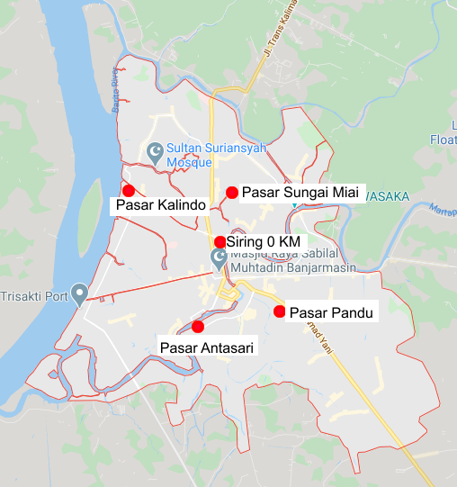
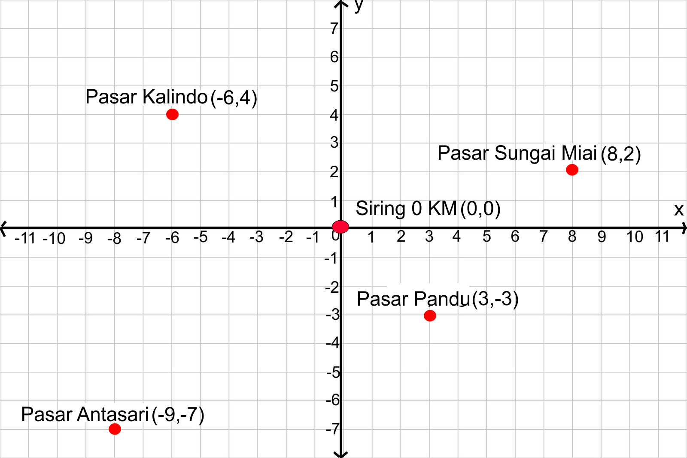
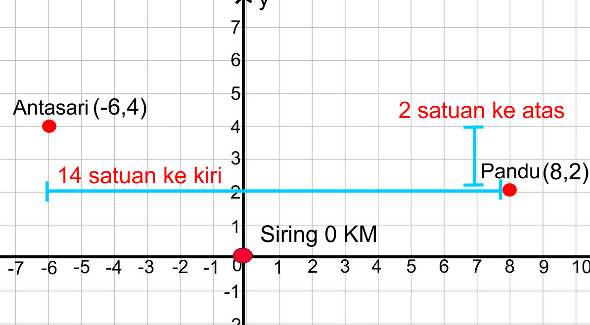
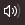
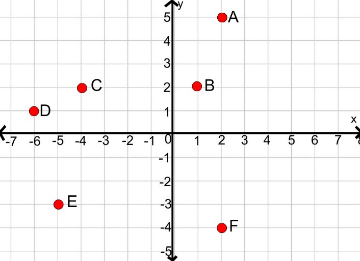

B. Posisi Titik Terhadap Sumbu Koordinat dan Titik Acuan
Tujuan Pembelajaran:
Siswa dapat menentukan posisi titik terhadap garis sumbu-x dan sumbu-y pada bidang koordinat
Siswa dapat menentukan posisi titik terhadap titik asal(0,0) pada bidang koordinat
Siswa dapat menentukan posisi titik terhadap titik acuan(a,b) pada bidang koordinat
Siswa dapat menyelesaikan masalah yang berkaitan dengan koordinat kartesius.
Setelah mengetahui bagaimana menentukan jarak titik terhadap titik asal(0,0),
selanjutnya kita akan mempelajari bagaimana cara menentukan jarak titik terhadap titik acuan
3. Posisi Titik Terhadap Titik Acuan(a,b) Pada Bidang Koordinat
Masalah 2.3 : Perhatikan gambar berikut ini!

Gambar 2.7 : Peta Pasar Tradisional Banjarmasin
Selain Pasar Sudimampir dan Pasar Lama, pasar tradisional yang terdapat di Banjarmasin
yaitu Pasar Sungai Miai, Pasar Kalindo, Pasar Antasari dan Pasar Pandu. Jika pasar tradisional di
Banjarmasin dijadikan sebagai titik koordinat seperti pada gambar di bawah ini

Gambar 2.8 : Bidang Koordinat Pasar Tradisional Banjarmasin
Perhatikan bidang koordinat Pasar Tradisional Banjarmasin tersebut, buatlah pertanyaan yang berikaitan dengan menentukan posisi pasar tradisional kota Banjarmasin pada bidang koordinat, misalnya sebagai berikut:
Bagaimana caranya untuk menentukan posisi titik Pasar Kalindo jika titik Pasar Sungai Miai dijadikan titik acuan
Bagaimana caranya untuk menentukan posisi titik Pasar Sungai Miai,Pasar Antasari dan Pasar Pandu, jika titik Pasar Kalindo dijadikan titik acuan?
Dari gambar bidang koordinat Gambar 2.8 kita dapat menentukan:
Posisi titik Pasar Kalindo terhadap titik acuan Pasar Sungai Miai,
Posisi titik Pasar Antasari terhadap titik acuan Pasar Sungai Miai
Posisi titik Pasar Pandu terhadap titik acuan Pasar Sungai Miai,
Posisi titik Pasar Sungai Miai terhadap titik acuan Pasar Kalindo,
Posisi titik Pasar Antasari terhadap titik acuan Pasar Kalindo,
Posisi titik Pandu terhadap titik acuan Pasar Kalindo,
Untuk menyelesaikan permasalahan di atas, ikuti langkah-langkah berikut ini
Langkah 1
Cara pertama adalah mengurangkan titik Pasar Kalindo(-6,4) dengan titik Pasar Sungai Miai(8,2) yang dijadikan sebagai acuan
Posisi Pasar Kalindo Terhadap Pasar Sungai Miai
= ((-6) – 8, 4 – 2)
= (-14,2)
Langkah 2
Cara kedua dengan menghitung jarak dari titik Pasar Sungai Miai menuju titik Pasar Kalindo

Langkah 3
Untuk sampai ke titik Pasar Kalindo(-6,4), diperlukan 14 satuan ke kiri dan 2 satuan ke atas dari titik Pasar Sungai Miai(8,2). Sehingga Posisi titik Pasar Kalindo terhadap Pasar Sungai Miai(-14,2).
untuk lebih jelasnya mari simak animasi berikut ini, klik tombol mulai untuk memulai animasi
Petunjuk Penggunaan Animasi
Klik tombol bendera hijau kemudian tekan mulai pada animasi di bawah ini untuk memulai.
Tekan tombol selanjutnya apabila anda ingin melanjutkan animasi
Masukkan jawaban anda pada kolom yang tersedia dan klik tanda checklist atau tekan enter
Naikkan volume suara  pada perangkat anda
*Tunggu beberapa saat apabila animasi interaktif belum muncul
Perhatikan gambar berikut ini kemudian lengkapilah kotak kosong di bawah ini dengan jawaban yang menurut anda benar berdasarkan gambar di bawah ini
Petunjuk:
Isikan jawaban anda pada kotak yang kosong.
Tekan tombol cek untuk mengecek jawaban.
Tekan tombol ulang untuk menghapus jawaban
Tekan tombol 1,2,3,4,5,6,7,8 di bawah soal atau tekan tombol "<" dan ">" di samping soal untuk mengganti ke nomor selanjutnya

Gambar 2.9 : Bidang Koordinat
1.Tentukan koordinat titik pada bidang koordinat di atas!
A(2,)
Kemudian klik tombol di bawah ini untuk mengecek jawaban anda
2. Tentukan koordinat titik pada bidang koordinat di atas!
B(,2)
Kemudian klik tombol di bawah ini untuk mengecek jawaban anda
3. Tentukan koordinat titik pada bidang koordinat di atas!
C(-4,)
Kemudian klik tombol di bawah ini untuk mengecek jawaban anda
4.Jika titik C dijadikan titik acuan, tentukan :
Posisi titik A terhadap titik C adalah ()
Kemudian klik tombol di bawah ini untuk mengecek jawaban anda
5.Jika titik C dijadikan titik acuan, tentukan :
Posisi titik B terhadap titik C adalah
Kemudian klik tombol di bawah ini untuk mengecek jawaban anda
6. Jika titik E dijadikan titik acuan, tentukan :
Posisi titik C terhadap titik E adalah
Kemudian klik tombol di bawah ini untuk mengecek jawaban anda
7.Jika titik E dijadikan titik acuan, tentukan :
Posisi titik D terhadap titik E adalah
Kemudian klik tombol di bawah ini untuk mengecek jawaban anda
8. Jika titik E dijadikan titik acuan, tentukan :
Posisi titik F terhadap titik E adalah
Kemudian klik tombol di bawah ini untuk mengecek jawaban anda


 apabila anda ingin melanjutkan animasi
apabila anda ingin melanjutkan animasi